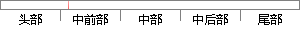

(2)无监督学习（Unsupervised Learning），常见算法有k-Means聚类算法；
片段位置图

相似结果|
相似片段 1：。常见的无监督学习算法是聚类，其中包括：K-means 聚类、结构性聚类、基于神经网络的聚类算法等。（3） 半监督学习（Semi-supervised Learning）：这是介于两者之间的学习算法。基本思路是仅对训练集中的少量样本标记，大部分样本维持未标记的状态，接着进行分类算法处理。
相似片段 2：也就是说存在输入和输出是监督学习训练算法的基本要求。训练集中的目标是人为标注的。常见的监督学习算法包括回归分析和统计分类。2）非监督学习(Unsupervised Learning)非监督学习又称
相似片段 3：4.2 K-Means算法与改进方法介绍K-Means聚类算法是一种最简单的无监督学习算法（Unsupervised Learning Algorithms），也被称之为动态聚类或逐步聚类方法
相似片段 4： learning)，半监督式学习 semi-supervisedlearning)以及无监督式学习(unsupervised learning)三类。上面小节介绍的常见的分类算法是属于监督式学习，而聚类
相似片段 5：目标，因此一个聚类算法通常只需要知道如何计算相似度就可以开始工作，这种不需要使用训练数据进行学习的方法在机器学习（Machine Learning）中成为无监督学习（Unsupervised Learning）。
相似片段 6：（Unsupervised learning）两类[44]。监督学习用于从已知的输入输出样本中估计未知数据的相关性，监督学习预先给了算法“正确结果”，即所有我们观察到的变量。监督学习可用于预测连续值的回归问题
相似片段 7：不需要用到局部特征的标签，具有生成速度快等优点。一个简单有效的字典学习方法就是把局部特征集合聚类。聚类是无监督（unsupervised learning）的机器学习算法，与有监督
相似片段 8：几种常用的用于降维以及分类的非监督学习算法，如 PrincipleComponent Analysis(PCA)，K-Means等方法，采用 Rand Index作为准确性指标。从图 3-8结果图中
|
※ 片段修改建议 ※
近似词参考：- 监督：监视
- 学习：进修
系统自动生成语句：(2)无监视进修（Unsupervised Learning），常见算法有k-Means聚类算法；
注：本片段修改建议为系统自动生成，仅供参考。